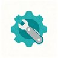
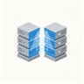

%s
欢迎提供建议或推荐网站，请发送至邮箱：
已记住的网络地址：
支持通过本地JSON文件或网络URL导入/导出全部配置（含快捷工具、每个工具的左/右位置、侧边栏折叠、分类折叠、待办/记事本等浏览器侧设置）。导出成功后可选择记住这份配置的网络地址，下次一键更新；地址随时可忘记或换成新的。
网络图片URL用于导入/导出配置；本地图片仅存在本机浏览器中
快捷键 Ctrl + 空格 同样可切换。状态会记住，刷新后保持；清爽模式打开时，用 Ctrl + S 仍能进入本设置面板把它关掉。
「刷新后自动折叠」＝平时可以随手展开，但每次刷新或重新打开页面都会自动回到折叠状态（适合开机先看搜索框）。
开启后主页面只显示当前选中分类的网站（点左侧分类即切换）；在搜索框里搜索时仍会显示所有分类中匹配的网站。默认关闭。
分类的排序模式与顺序已移到配置编辑器的「🧭 分类排序」标签页（可显示自定义分类名称，支持 ↑↓ 调序）。